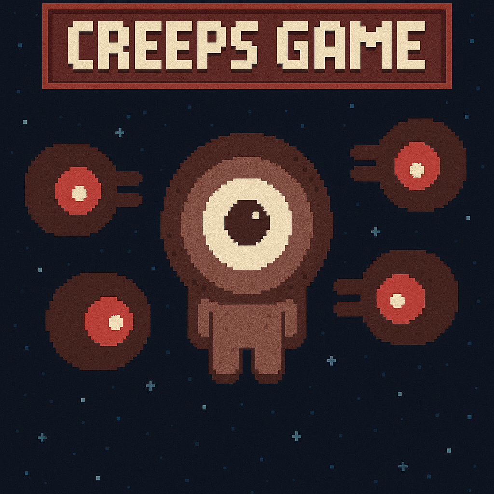

← Back to Projects
Creeps Game

Creeps Game is a 2D pixel-art arcade game developed in Godot.
Players must survive against unpredictable "creeps" whose movements are procedurally generated,
offering a fresh challenge every round. The game was designed for web and runs entirely in-browser.
-
Technologies: Godot Engine, GDScript, HTML5, GitHub Pages
-
Repository: GitHub
-
The game architecture was built around modular design, allowing easy tweaking of enemy behavior and game difficulty. Procedural logic was implemented using random and noise-based algorithms to govern enemy movement. Assets were optimized for web delivery, and the game was deployed through GitHub Pages for instant access.
- Play